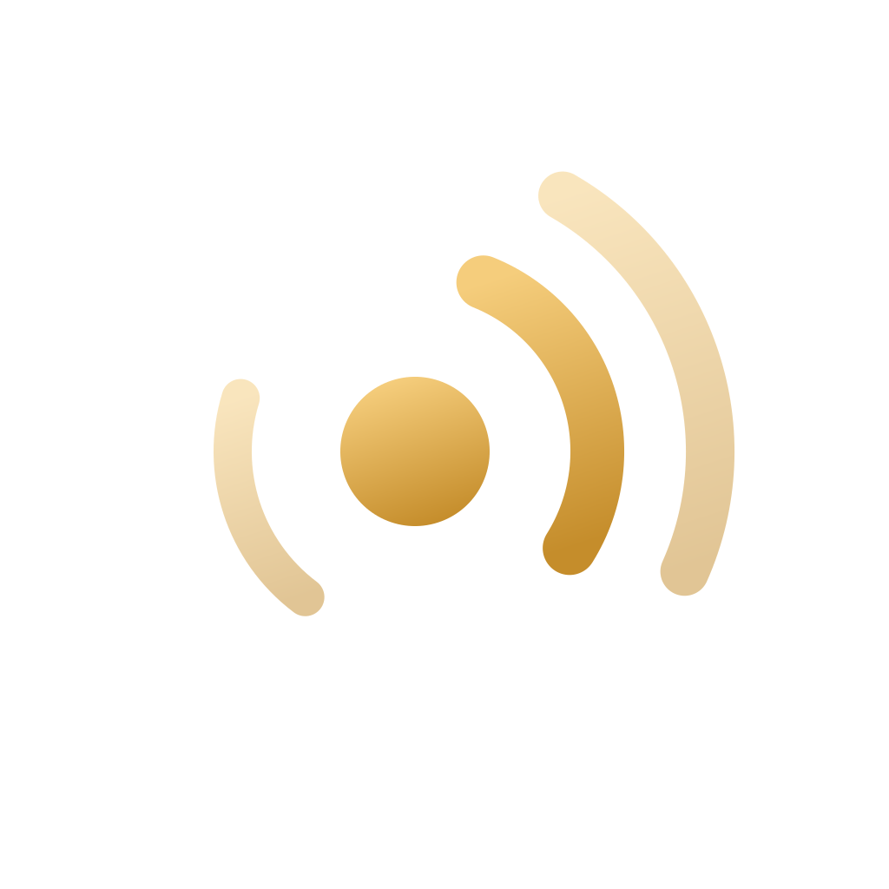
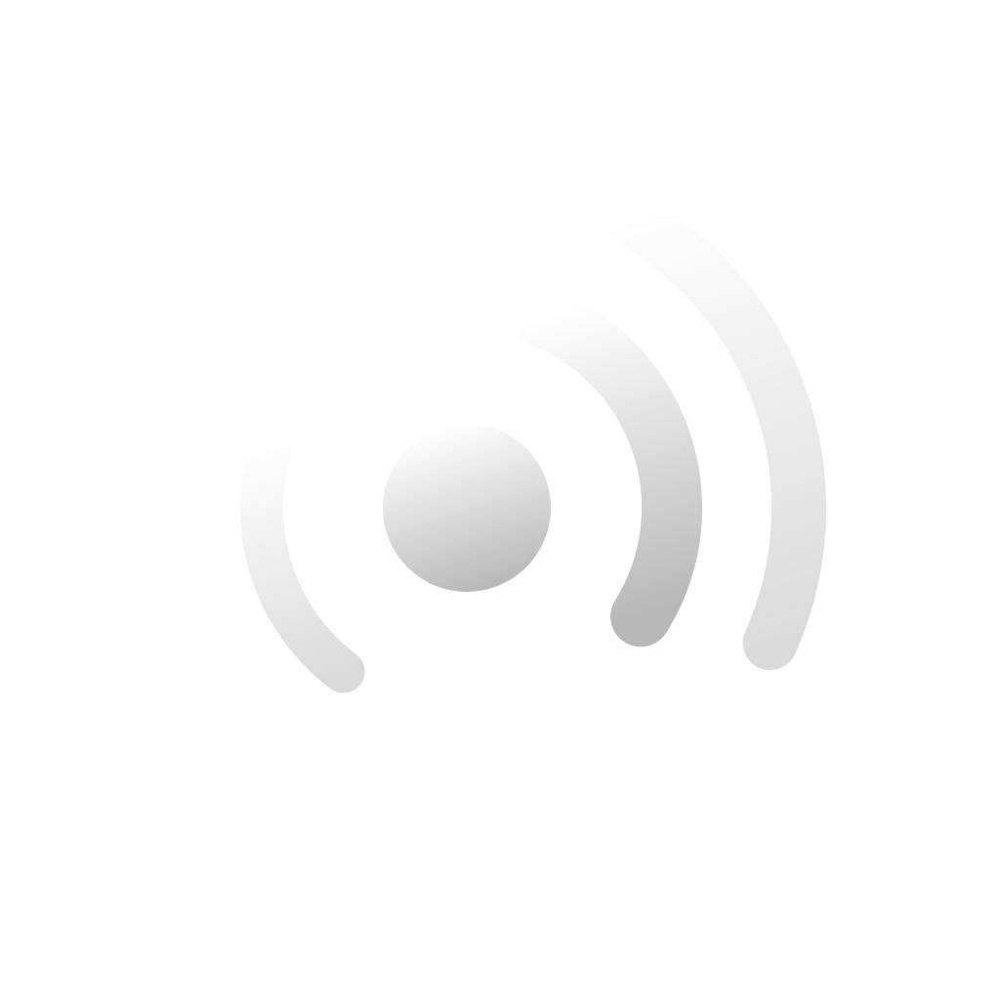

Auvel P1 app icons · I1 Signal, redrawn
iOS default (1024, 180, 120, 80, 40 px)

iOS dark and tinted appearances (iOS 18+)

Dark

Tinted (blue tint simulated)
macOS (1024 canvas, 824 body) and menu bar template at 18 pt

Light menu bar
Dark menu bar (template inverted by macOS)
Change from the G0 sketch (R9)
G0 sketch: symmetric pairs,
matches dot.radiowaves.left.and.right
matches dot.radiowaves.left.and.right
P1: 2 arcs right, 1 arc left,
tilted 18°, uneven weights
tilted 18°, uneven weights